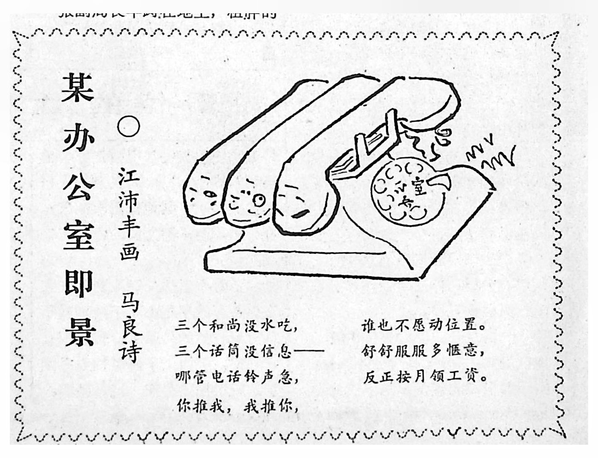

江沛丰画；马良诗 《人事》1988年第4期（总第31期），第48页
某办公室即景
A Scene in a Certain Office
- Caption
- 三个和尚没水吃，三个话筒没信息——哪管电话铃声急，你推我，我推你，谁也不愿动位置。舒舒服服多惬意，反正按月领工资。
Three monks, no water to drink; three receivers, no messages — never mind how urgently the telephone rings, you push it to me, I push it to you, no one is willing to move from his place. So comfortable, so pleased with ourselves: we get our wages every month regardless. - Text in the drawing
- 办公室（电话拨号盘上）
Office (on the telephone dial) - Description
- A ringing office telephone carries three receivers, each with a dozing face, lying side by side; none of them will pick up.
- Note
- The poem opens with the proverb about monks and water: one monk carries water for himself, two carry it together, three have none to drink.
- Artists
- Jiang Peifeng 江沛丰 (drawn); Ma Liang 马良 (poem)
- Published in
- 《人事》1988年第4期（总第31期）, p. 48
- Themes
- Bureaucratism · Passing the buck · Overstaffing and overlapping agencies

Cite
Jiang Peifeng and Ma Liang, “某办公室即景” [A Scene in a Certain Office], Renshi (Personnel) 《人事》, 1988, no. 4, p. 48.